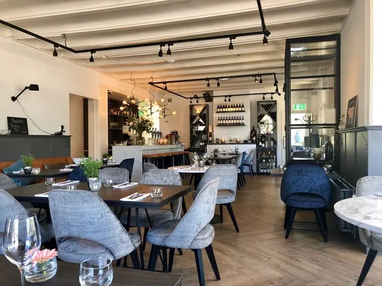
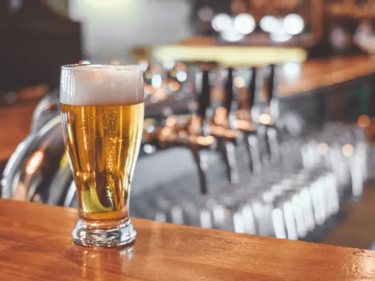
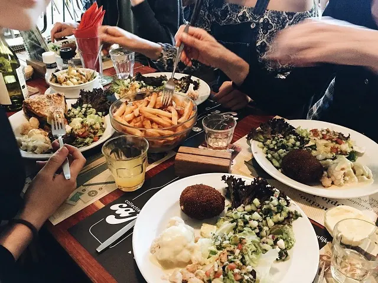
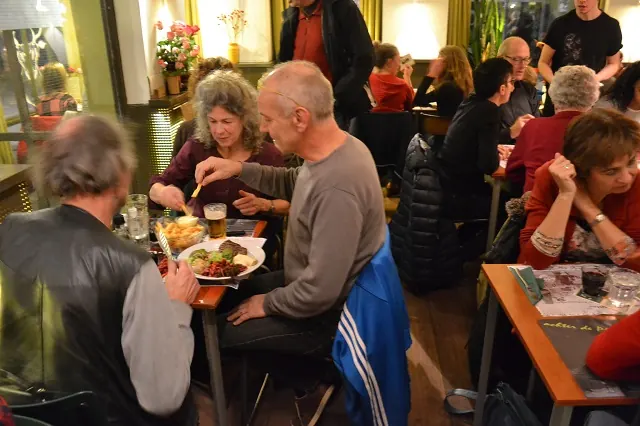
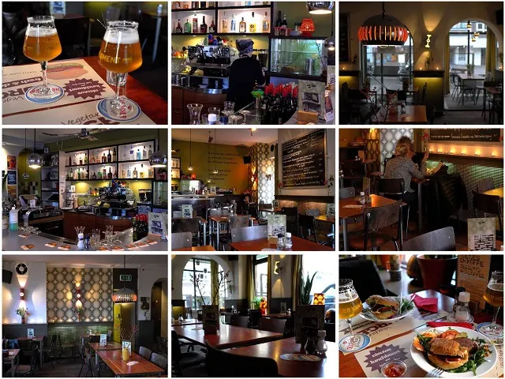
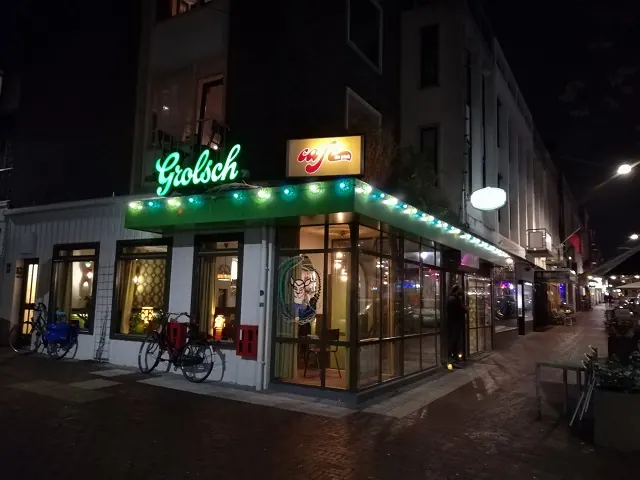

De 7 cafés met de meeste historie van Nijmegen
Gepubliceerd op 20 december 2022, bijgewerkt op 20 februari 2024
Onderdeel van de gids Cafés in Nijmegen

De geschiedenis van de Nijmeegse cafés loopt ver terug in de tijd. Volgens gemeentearchief Nijmegen was er al sinds de viertiende eeuw spraken van één of meerdere brouwerijen. Nu is dat niet zo gek, aangezien water niet schoon was en daarmee bier voedzamer en gezonder was.
Dit zijn de cafés met een lange geschiedenis
1. Café In De Blaauwe Hand
Café In De Blaauwe Hand is het oudste café van Nijmegen. De eerste stenen van het pand werden in 1310 gelegd. Je ziet nog altijd de grijsblauwe pilaren uit die tijd in de gevels terug. Het pand heeft jaren gediend als weverij, tot het in 1540 gedaan was met de lakenhandel. In 1542 werd het een dranklokaal, waar vermoedelijk veel lakenververs kwamen. Zo ontstond de naam: De Blaauwe Hand.
Een extra bijzondere dag in de geschiedenis van De Blaauwe Hand, was 9 februari 1546. Op die dag was er een feest waar Keizer Karel de vijfde aanwezig was. In 1797 kreeg de naam een plek op de gevel van het pand. Gelukkig heeft het pand weinig schade geleden in de WOII. Eigenaar Gert de Graaf leidt sinds 1994 het café, waar kennis van producten, wijnen en zeker bier niet ontbreekt.
2. Restaurant Groenewoud
Restaurant Groenewoud is na café In De Blaauwe Hand de oudste van Nijmegen. Ooit is het pand gebouwd als woning in 1763 voor boswachter Frans. Hij verdiende weinig dus begon hij een herberg. Toen de tweede Frans eigenaar werd in 1874, werd het een koffiehuis. De grap is dat hij in die tijd om dagjesmensen aan te trekken de jenever en het bier juist van de kaart moest halen. Zo werden de gasten niet gestoord door dronkenlappen.
Groenewoud was in handen van een rustige Frans Rinssenbeek, hij stierf aan een acute hartstilstand, nadat een gast ruzie met hem begon te maken. Het was niet de klap, maar de schrik die hem fataal werd. Dit was de laatste Frans. Hierna werd de familie Hofman eigenaar van de kroeg. Sinds 1986 nam de familie Kalmár het stokje over.
Sinds 2019 heeft het jonge ondernemerskoppel Maurice Kersten en Susanne Hulck het heft in handen. Je kunt hier nu culinair genieten, want dit café is veranderd in een sfeervol restaurant waar je heerlijk kan eten en genieten van elkaars gezelschap!

3. Café Samson
Café Samson is al sinds 1925 een begrip in Nijmegen. De familie Samson opende de vestiging destijds aan de Waal. In de jaren 50 verhuisde ze naar de huidige locatie aan de Houtstraat. In café Samson werkte ze vroeger met een strik om en nog altijd ziet het personeel er piekfijn uit. In 1993 geeft de laatste uit de familie Samson het stokje over aan Frits. Inmiddels is ook bekend dat Bjorn Boschman het weer van hem zal overnemen.
Vroeger was café Samson een van de weinige cafés in Nijmegen waar je speciale biertjes kon krijgen. En nu moeten ze concurreren met vele anderen. Alleen heeft café Samson iets opgebouwd, wat niet te koop is. Het is een café met sfeer en veel vaste gasten, van alle leeftijden. Iedereen voelt zich thuis bij Samson. Niet voor niets staan ze in de café top 100 van Nederland.
4. Café Piet Huisman
Café Piet Huisman hoort thuis in het rijtje historische cafés, naar eigen zeggen zijn ze een van de oudste familiecafés. het café is opgericht in 1949 door Piet Huisman. Inmiddels is de vierde generatie Huisman actief in het café.
‘We proberen de fijne warme sfeer van een ‘ouderwets’ bruin café in eren te houden. Met deze benadering proberen wij ook alle veranderingen aan te pakken. Wij vinden het een mooi compliment als er gasten van 40 jaar geleden, wie toen in Nijmegen studeerde weer bij ons in het café afspreken en zeggen dat er niks is veranderd. Dan hebben we het goed gedaan’, geeft de huidige eigenaar Maurice huisman aan.
Voor de familie Huisman heeft de familie Gerrits kort het café gerund, maar voor nu is het dus ouderwets vertrouwd genieten geblazen bij café Piet Huisman.

5. Café ’t Haantje
Café ’t Haantje ligt aan het begin van de prachtige wijk Nijmegen-Oost. Tussen de nieuwe trendy koffiezaakjes en restaurants, blijft ’t Haantje een groot favoriet. De gezellige bruine kroegsfeer is nog als vanouds. De derde generatie runt inmiddels het bedrijf, sinds 1957. Het café is al meer dan 100 jaar oud. Bij café ’t Haantje kun je lekker je krantje lezen, een potje biljarten, voetbal kijken of genieten op het terras.
Er wordt van alles georganiseerd bij ’t Haantje, van een waar Oktoberfest tot een speciaal kinderfestijn met carnaval en Sinterklaas. ’t Haantje doet mee aan elk evenement dat door de kroegen in de wijk georganiseerd wordt. Zo kan je hier je lol op tijdens het: Tribute-festival, Easter-Jazz en de Troots van Oost.
6. Café ’t Paleis
Café het Paleis bestaat 9 januari 2023 alweer 30 jaar. Maar de geschiedenis gaat verder terug. Zo hadden de zusjes Anita en Rita beiden een café aan de Priemstraat. Op nummer vijf en nummer negen. Waar Anita nog lang de geliefde buurvrouw van de caféhouders van ’t Paleis bleef, stopte Rita eerder.
Het karakteristieke café van Rita werd overgenomen door een advocatenkantoor, werd vervolgens een coffeeshop en opnieuw een café. De twee cafés werden geen succes. Gelukkig namen Frank van de Laak en Leon Berkers het over in 1983. Leon is uiteindelijk uitgevlogen om De Kaaij en Opoe Sientje op te starten.
Café ’t Paleis is altijd de thuishaven geweest van Frank Boeien en vele andere Nijmegenaren. Het heeft alles wat een café nodig heeft. Je bent er elke dag welkom vanaf 16:00 en in het weekend wordt er nog ouderwets geswingd door jong en oud.
7. Café de Plak
In 2026 viert café de Plak zijn 50e verjaardag. Sinds 1982 namen twee medewerkers het café over van de eerste eigenaren. De Plak werd een collectief en dat is voelbaar. De plak is meer dan alleen een café. In de jaren ’80 was het de thuishaven van vele activisten. Ook steunde de Plak de demonstranten van de Piersonrellen. De Plak was ook de plek om te dansen en te eten. En dat is altijd zo gebleven.
Inmiddels is café de Plak een top eetcafé, met hun eigen klassieke gerechten. Ze zijn ook gaan cateren op festivals. En gelukkig worden erin de kelder nog altijd goede feesten gegeven. De Plak is de plek waar echt iedereen zich thuis zal voelen.




Leuke weetjes
- De 7 gezelligste cafés buiten het centrum van Nijmegen
- De 8 beste biercafés van Nijmegen
- Dit zijn de 6 leukste eetcafés van Nijmegen